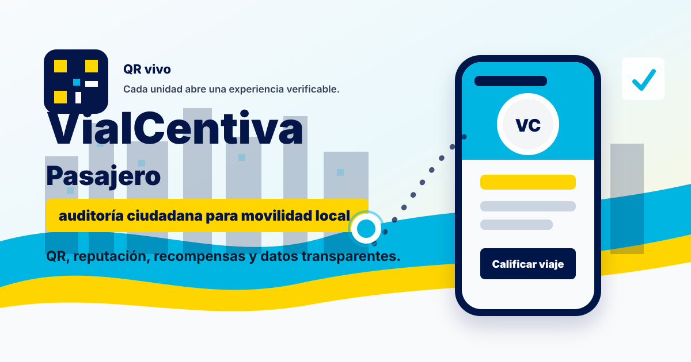
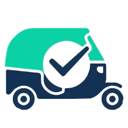
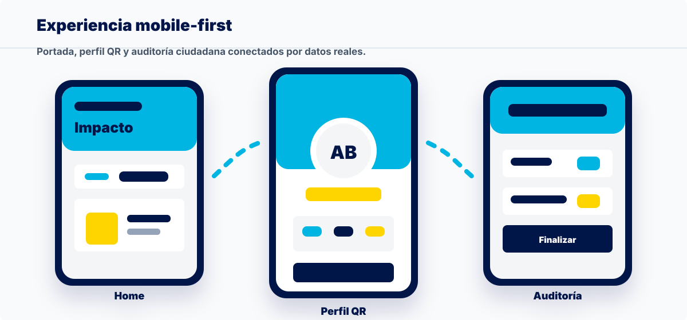
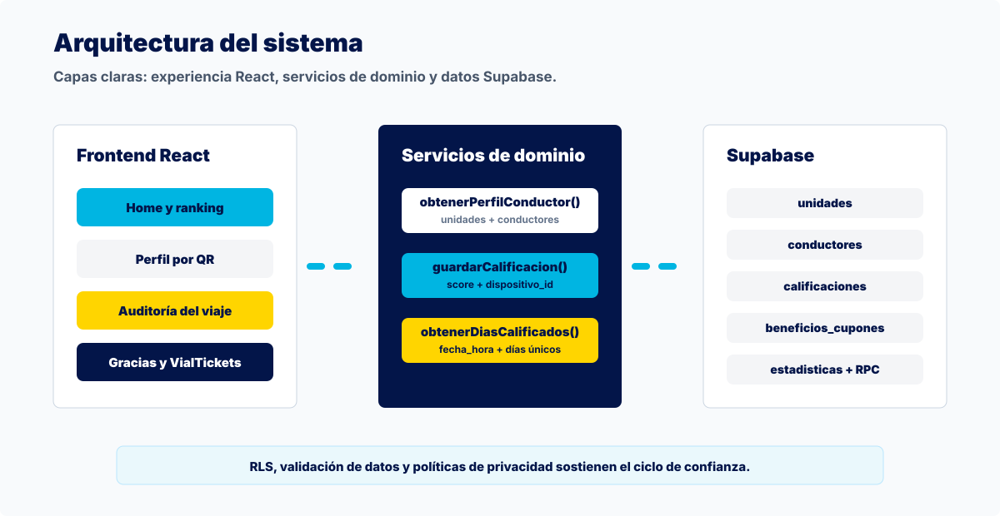

Repositorio profesional
Auditoría ciudadana para transporte local.
Una experiencia QR que convierte cada viaje en reputación, datos y beneficios para una movilidad más transparente.


VialCentiva PasajeroUna experiencia QR que convierte cada viaje en reputación, datos y beneficios para una movilidad más transparente.

La calidad del servicio, el respeto al paradero, el trato y la seguridad suelen quedar como experiencias aisladas. VialCentiva les da estructura, privacidad y valor comunitario.
La app está pensada para el momento real del viaje: pantallas grandes, decisiones claras, contraste fuerte y rutas directas.

El recorrido conecta unidad, conductor, evaluación, guardado de datos, racha y beneficios sin romper el contexto del pasajero.
La lógica principal vive en `src/services/api.js`: obtiene perfiles, guarda calificaciones y calcula rachas por `fecha_hora`.

La portada reúne visitas, viajes auditados, conductores activos, ranking y beneficios. Es una vitrina viva del proyecto.
El repositorio ya puede presentarse profesionalmente en GitHub y quedar preparado para paneles, reportes, analítica y aliados.